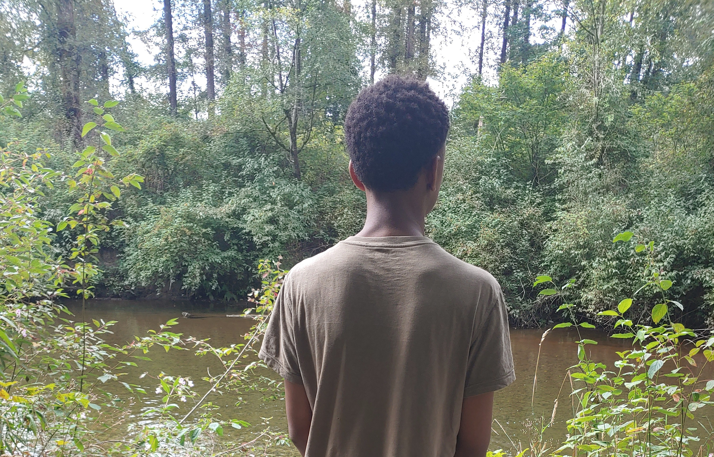

Motivated Student Building Skills for Future Career Success
Dedicated, hardworking, and eager to learn while developing
leadership, teamwork, and professional skills.
About Me

I am a Grade 10 student currently attending Riverside Secondary School interested in
developing workplace, leadership, and communication skills
for future career success.
My long-term goal is to pursue a career in ophthalmology or optometry and contribute to improving healthcare through science, innnovation, and patient care.
Short Biography Section
I am a hardworking Grade 10 student with large interests in science, mathematics, leadership and community involvement.
I am currently building the skills and experiences needed to puruse a future career in medicine.
Long Biography Section
I am a dedicated student at Riverside Secondary School who is passionate about learning and personal development.
Throughout high school, I have challenged myself thorugh honours courses, many math competitions like the Lynx, CSMC,
Pascal, Fryer, etc. I have also been involved in athletics, STEM programs, and extracurricular activites. These
experiences have strengthened my leadership, teamwork, communication, and problem-solving skills. I have earned
academic recognition in numerous subjects and continue to seek opportunities that help me grow both acaedmically and
personally. My long-term goal is to become an ophthalmologist and contribute positively to the healthcare field.
Resume
View Full Resume (PDF)
Education
Riverside Secondary School
Grade 10 Student
Graduation Year: 2028
Highlighted Personal Skills
Teamwork
Communication
Problem solving
Leadership
Major Activities
Canadian Intermediate Mathematics Contest (CIMC)
Description:
Participated in both the Canadian Intermediate Mathematics Contest for 2024 and 2025,
a national competition made to challenge advanced mathematical reasoning and problem-solving
techniques.
What I Learned: I strengthened my analytical thinking, mathematical reasoning,
and ability to solve complex problems under time limits
Competitive Robotics Team
Description:
Collaborated with fellow students to design, build, and improve robotic systems while participating
in team projects and competitions.
What I Learned:
I developed teamwork, communication, technical problem-solving, and engineering design skills.
Science Co-op 11
Description: Selected as a member of Riverside Secondary's Science Co-op program,
providing opportunities to explore advanced scientific concepts and real-world applications.
What I Learned: I will gain deeper scientific knowledge while improving my research,
collaboration, and critical-thinking skills.
Junior Boys Basketball Team
Description: Played as a Power Forward/Centre on the Junior Boys Basketball Team,
contributing both on and off the court.
What I Learned: I improved my leadership,
teamwork, discipline, resilience, and the ability to perform to the best of my abilities in a competitive
environment.
Main Portfolio
Additional Achievements & Activities
Academic Excellence
Achieved Excellence in Mathematics 9, Science 9, and Entrepreneurship 10
Recognized for Academic Excellence by Igbo Development Association of BC (2024)
Achieved Top Marks in Foundations of Mathematics and Pre-Calculus 10 Honours
Honour Roll Student for Grade 10
Achieved/Achieving Top Marks in Literary Studies and Composition 10 Honours
Athletics
Power Forward/Centre for Junior Boys Basketball Team (2025-2026)
Former Runner for Cross Country Team (2024-2025)
Community Involvement
Member/Contributor to Health Sciences Club
Member of Cancer Research Club
Member of Model UN Club
Member of Black Essence Coquitlam